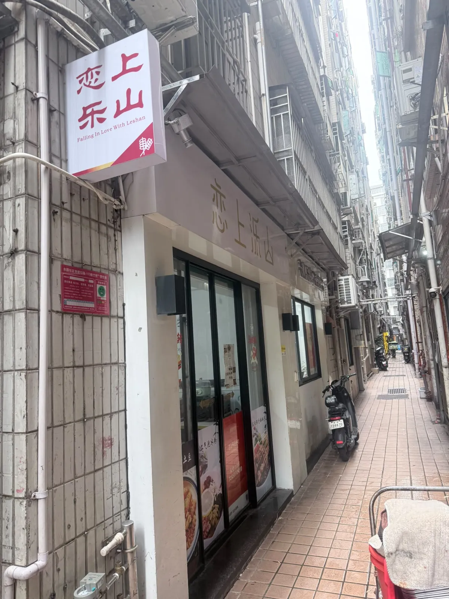
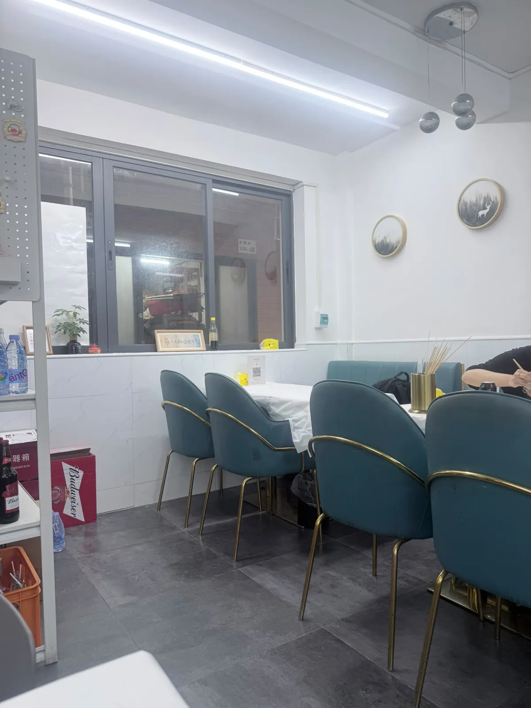
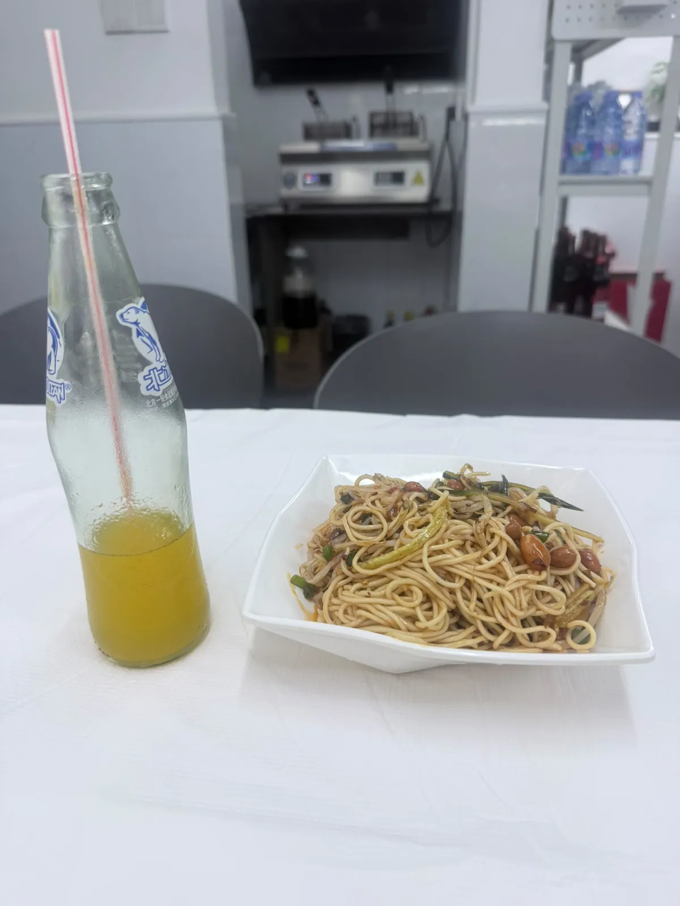
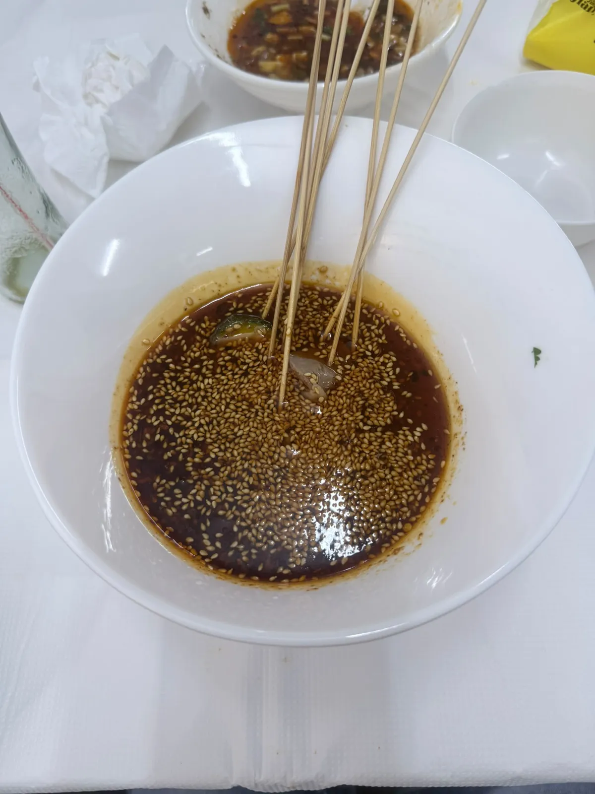
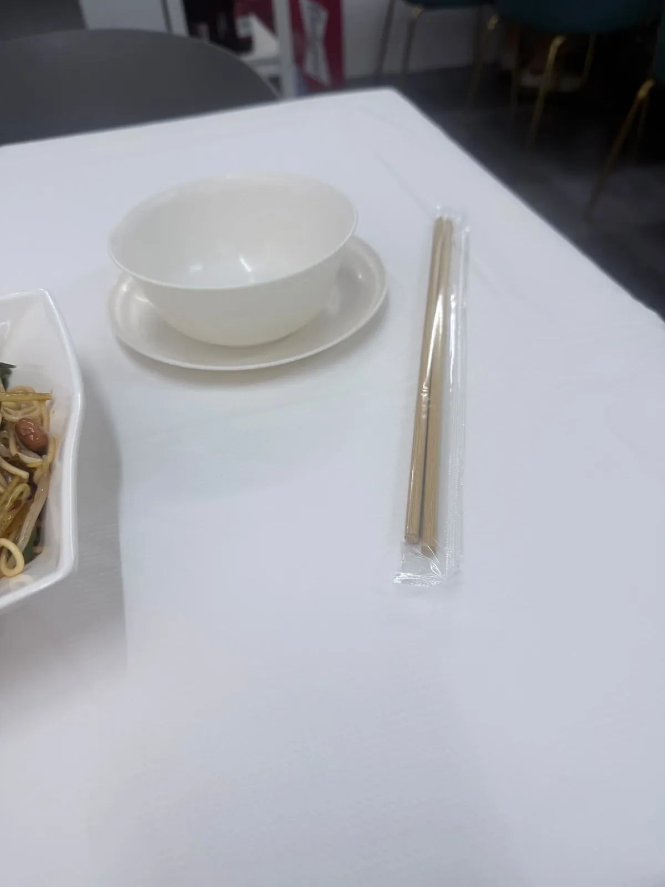

戀上樂山小吃（水圍恆春園店）：套餐 ¥50.5，埋單 ¥61.1
深圳福田水圍村巷仔入面一間細舖。2026-09 上旬去，兩個人，自費。落座嗰陣老闆推介咗佢哋一個人氣套餐，計落嚟 ¥50.5；埋單係 ¥61.1。一句總結：涼麵好好食，經典紅油香而唔膩，串燒係現烤唔係預製 —— 雖然難搵、座位唔多，但味道對得起必吃榜。下面順便拆埋兩筆落單嗰陣喺畫面上睇唔到嘅成本：中間嗰 ¥10.6，同一次性餐具費 ¥4。
食咗咩，同幾多錢
當日紀錄
到訪日期：
點咗咩：
套餐小計：
最終埋單：
營業時間：
地址同點去：
過關之後想即刻有數據、唔使換實體卡，可以睇 。 ⚠️ 呢條係 Klook 上網卡嘅總表，入面搵「中國」就係。連分類頁唔連單一產品頁，係因為單一產品下架會變 404，分類頁唔會。本站部分連結為推廣連結，經此類連結消費本站可能獲得佣金，價格不受影響。
價錢、榜單同人流呢啲嘢會變，所以佢哋抽咗出嚟獨立標明核實月份 —— 實食紀錄呢個分區嘅硬規則之一。正文只留唔會變嗰部分。
搵咗幾分鐘

花咗幾分鐘先搵到。地圖上搵唔到呢間舖，原來佢藏喺水圍村條巷仔入面。外面有個掛住牌嘅地方，但招牌唔顯眼，唔留神好易錯過。
行入去之後，係一間好細嘅舖，座位唔多。老闆好熱情，招呼我坐出面，比想像中親切隨和。

涼麵同經典紅油

涼麵好好食，食完打算自己試煮復刻。
經典紅油味道特別，香而唔膩，微辣開胃。呢個係落單嗰陣得 ¥5 嘅一項，但佢係成餐嘢入面本站最記得嗰兩味之一。
串燒係埋單先發現嘅特色

成餐嘢最有趣嗰個位喺埋單嗰陣。老闆娘同老闆問我有冇食串燒，我先意識到串燒係呢間店嘅特色。落單嗰陣冇人提過，套餐入面亦見唔到。
問老闆邊幾串好食，老闆話都好食，最後揀咗六七串。
串燒係現烤，唔係預製冷凍肉。火候啱好，有煙火氣。
¥50.5 同 ¥61.1 之間嗰 ¥10.6
價錢拆細
本站有單價嘅三項：
一次性餐具：

兩個數放埋一齊睇：落單嗰陣套餐計落嚟 ¥50.5，最終埋單 ¥61.1。
中間差 ¥10.6，就係埋單之前先加嗰六七串串燒。呢筆錢冇問題 —— 有問題嘅係佢喺落單畫面上面根本唔存在：你睇住個套餐價落單，佢唔會話你知呢間店嘅特色要另外叫。如果嗰 ¥10.6 全部係串燒，六至七串計落嚟大約每串 ¥1.5 至 ¥1.8，不過呢個係本站自己計嘅估算，唔係訂單上嘅逐串價。
一次性餐具費 ¥4（兩位）係同一類嘢：佢喺訂單上面顯示，但唔會出現喺你心入面嗰個「食幾多錢」嘅預算度。兩筆加埋 ¥14.6，佔埋單金額大約兩成四。
仲有一件要講明嘅事：本站手上淨係得三項單價 —— 涼麵 ¥15、經典紅油 ¥5、北冰洋 ¥7，三項加埋 ¥27；連餐具費 ¥4 都只係 ¥31。兩個數都對唔到 ¥50.5。即係話套餐入面仲有幾樣嘢本站冇逐項價，而 ¥4 有冇計入嗰 ¥50.5，本站亦冇得知。呢兩個空位本站唔會靠估填 —— 砌返一堆單價出嚟令條數啱晒，係最容易，亦係最唔應該做嘅嘢。
另一篇同樣喺深圳、同樣拆價錢結構嘅紀錄：小楊生煎（坪山益田店）。嗰邊拆嘅係「張券平咗幾多」同「套餐組合平咗幾多」係兩件事；呢邊拆嘅係落單畫面之外嘅加項。
值唔值得專登去
本站判斷
判斷：
總結：雖然難搵、座位唔多，但味道對得起必吃榜。如果你去，兩件事預先知定：串燒要自己開口叫，同埋埋單會有兩筆落單嗰陣睇唔到嘅數。
本分區其餘嘅實食紀錄一樣係咁寫：一次到訪、一個日期、一組會過期嘅數。
常見問題
套餐 ¥50.5、埋單 ¥61.1，中間差嗰 ¥10.6 係咩？
係埋單之前先加嗰六七串串燒。落單嗰陣個套餐畫面冇提過串燒，係老闆娘同老闆埋單時問起先叫。如果嗰 ¥10.6 全部係串燒，六至七串大約每串 ¥1.5 至 ¥1.8 —— 呢個係本站計嘅估算，唔係訂單上嘅逐串價。
¥15 加 ¥5 加 ¥7 淨係 ¥27，點解對唔到 ¥50.5？
因為本站手上淨係得呢三項單價。連一次性餐具費 ¥4 都只係 ¥31，一樣對唔到 ¥50.5 —— 套餐入面仲有幾樣嘢本站冇逐項價，而 ¥4 有冇計入嗰 ¥50.5，本站亦冇得知。呢兩個空位本站唔會靠估填，寧願喺度講明條數對唔齊。
間舖係咪好難搵？
係。本站花咗幾分鐘，地圖上搵唔到，最後喺水圍村條巷仔入面搵到。外面有個掛住牌嘅地方，但招牌唔顯眼，唔留神好易錯過。地址同出口見上面資料塊，不過嗰個係平台資料唔係商戶公布，出發前自己再確認。
串燒係咪預製冷凍肉？
本站嗰次食嘅係現烤，唔係預製冷凍肉，火候啱好，有煙火氣。問老闆邊幾串好食，老闆話都好食。呢個係一次到訪嘅觀察，唔代表每一日每一爐都一樣。